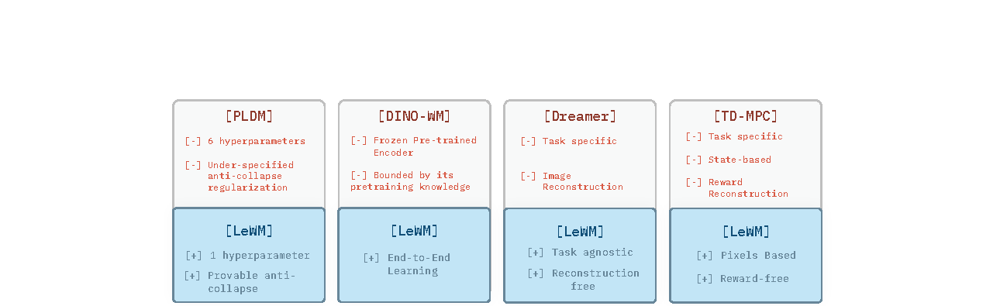
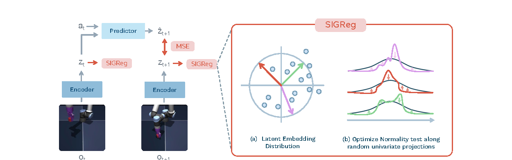
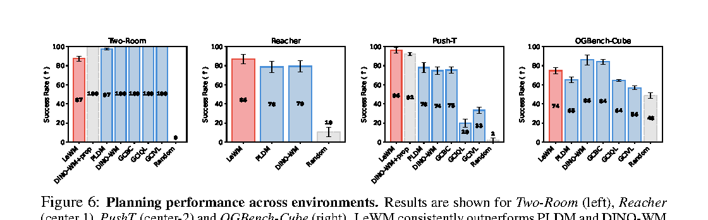
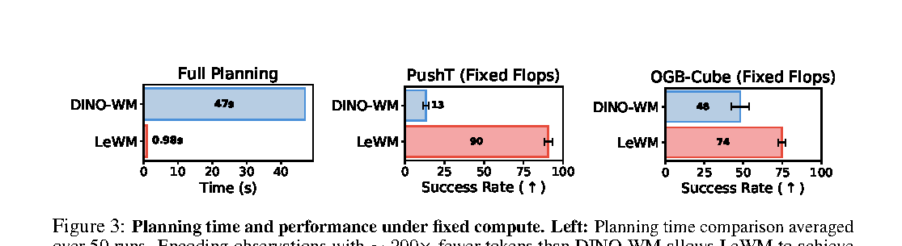
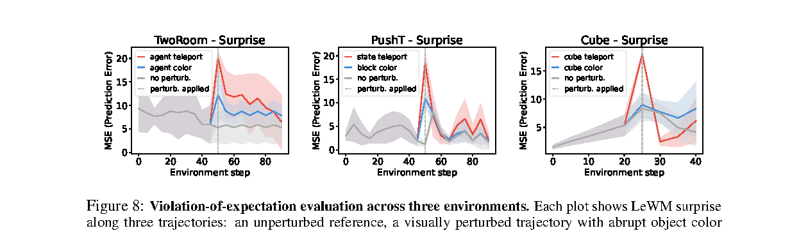

一句话总结
LeWorldModel 的核心贡献是：不用 frozen pretrained encoder、stop-gradient、EMA、重建损失或 reward supervision， 只靠 next-embedding prediction 和 SIGReg 高斯分布正则，就能从 raw pixels 稳定端到端训练 latent world model。
论文要解决的问题
JEPA 类 world model 希望不重建像素，而是在 compact latent space 中预测未来。这个方向很优雅： 模型只需要学习对未来预测和规划有用的状态变量，而不用生成所有视觉细节。但它也有一个致命问题： 如果 encoder 和 predictor 同时训练，单纯的 latent prediction loss 有一个平凡最优解。
z_t = encoder(o_t)
z_{t+1} = encoder(o_{t+1})
z_hat_{t+1} = predictor(z_t, a_t)
L_pred = || z_hat_{t+1} - z_{t+1} ||^2如果 encoder 把所有图像都编码成同一个常数向量，predictor 永远预测这个常数，预测损失仍然可以为 0。 因此，端到端 JEPA 必须解决 representation collapse。

创新点怎么理解
两项损失训练端到端 JEPA
训练目标只有 prediction loss 和 SIGReg regularization。相比 PLDM 的多项 VICReg/temporal/IDM 损失， LeWM 把稳定性问题压缩成更清晰的 distribution matching。
用高斯先验反坍塌
SIGReg 要求 latent embeddings 接近 isotropic Gaussian。坍塌分布是一个点质量分布， 与标准高斯的方差和形状都冲突，因此不再是总目标的好解。
轻量潜空间规划
LeWM 用 compact latent 做 CEM/MPC 规划。论文报告其规划速度可比 foundation-model-based DINO-WM 快约 48 倍。
物理结构验证
作者不仅看 success rate，还用 physical probing、latent decoding、violation-of-expectation 检查 latent 是否包含物理状态。
LeWM 真正有价值的地方不是“性能全场第一”，而是给端到端 latent world model 提供了一个干净的反坍塌训练范式。
方法总览

offline trajectories: (o_1:T, a_1:T)
↓
encoder: z_t = encoder(o_t)
↓
predictor: z_hat_{t+1} = predictor(z_t, a_t)
↓
prediction loss: || z_hat_{t+1} - z_{t+1} ||^2
+
SIGReg: match latent distribution to N(0, I)
↓
latent world model for goal-conditioned MPC表示坍塌：为什么会发生
只做 latent prediction 时，预测目标不是固定标签，而是 encoder 自己生成的下一帧表示。 因此 encoder 和 predictor 可以共同找到一个“作弊解”：
encoder(o) = c, for all o
predictor(c, a) = c, for all a
L_pred = || predictor(encoder(o_t), a_t) - encoder(o_{t+1}) ||^2
= || c - c ||^2
= 0这个解从优化角度看是完美的，但从世界模型角度看完全没用：图像中的位置、速度、接触关系、动作后果都被抹掉了。 这也是为什么 frozen encoder 的 DINO-WM 不容易出现同样的问题：encoder 不更新，predictor 不能让目标 latent 一起塌。 但 LeWM 追求端到端训练，所以必须显式阻止 collapse。
SIGReg：数学上怎么反坍塌
LeWM 的完整目标是：
L_LeWM = L_pred + lambda * SIGReg(Z)
L_pred = || predictor(encoder(o_t), a_t) - encoder(o_{t+1}) ||^2其中 Z 是一个 batch 或一段轨迹里的 latent embeddings 集合：
Z = {z_1, z_2, ..., z_n}SIGReg 的目标是让 latent 的整体分布接近标准高斯：
P_Z ≈ N(0, I)如果发生坍塌：
z_i = c, for all i
P_Z = delta_c
Var(Z) = 0但标准高斯满足：
Var(N(0, I)) = I所以坍塌分布和 SIGReg 的高斯目标冲突。坍塌时虽然 prediction loss 可以为 0，但 SIGReg 会很大：
L_LeWM = 0 + lambda * large随机投影
高维分布直接检验很难，SIGReg 使用随机一维投影。采样 M 个单位方向：
u^(1), u^(2), ..., u^(M)
|| u^(m) || = 1把 latent 投影到每个方向：
h^(m) = Z u^(m)
h_i^(m) = z_i · u^(m)如果 z 服从标准高斯，那么任意单位方向上的投影都应服从一维标准正态：
z ~ N(0, I) => z · u ~ N(0, 1)Epps-Pulley normality test
对每个一维投影 h，SIGReg 用 characteristic function 比较它和标准高斯的差距：
phi_N(t; h) = (1 / N) * sum_{j=1}^N exp(i t h_j)
phi_0(t) = exp(-t^2 / 2)
T(h) = integral w(t) * | phi_N(t; h) - phi_0(t) |^2 dt最后对所有随机方向取平均：
SIGReg(Z) = (1 / M) * sum_{m=1}^M T(Z u^(m))如果一个高维分布在所有一维方向上的投影都匹配另一个分布，那么高维联合分布也匹配。 LeWM 用有限个随机方向近似这个条件。论文默认 M = 1024。
Latent MPC：如何用世界模型规划
训练完成后，encoder 和 predictor 固定。给定当前图像和目标图像：
z_1 = encoder(o_1)
z_g = encoder(o_g)对候选动作序列进行 latent rollout：
z_hat_{t+1} = predictor(z_hat_t, a_t)规划目标是让 rollout 终点接近目标 latent：
C(z_hat_H) = || z_hat_H - z_g ||^2
a_1:H* = argmin C(z_hat_H)论文使用 CEM 优化动作序列，并采用 MPC 方式执行和重规划。
实验结果

| 任务 | LeWM | PLDM | DINO-WM | 关键信息 |
|---|---|---|---|---|
| Push-T | 96 | 78 | 74 | LeWM pixels-only 甚至超过 DINO-WM+prop 的 92 |
| Reacher | 86 | 78 | 79 | LeWM 小幅领先 |
| OGBench-Cube | 74 | 65 | 86 | DINO-WM 受益于 DINOv2 视觉预训练 |
| Two-Room | 87 | 100 | 97 | 简单低维环境可能不适合高维高斯 prior |

物理理解与 Surprise
作者用 probing 检查 latent 是否包含物理变量。在 Push-T 上，LeWM 对 agent location、block location、 block angle 的预测明显优于 PLDM，并接近 DINO-WM。更重要的是，violation-of-expectation 实验显示： 当物体发生 teleport 这类物理连续性破坏时，prediction error 会出现明显 spike；颜色突变的影响相对弱。

局限与疑问
- 短视野：默认规划 horizon 只有 5 个模型步，长程推理仍未解决。
- 依赖动作标签：训练需要 offline trajectories 中的 action；纯视频场景还需要 inverse dynamics 或 action abstraction。
- 高斯 prior 不总是合适：Two-Room 的失败提示低维简单环境可能被高维 isotropic Gaussian 约束干扰。
- 复杂 3D 细节不足：OGBench-Cube 中旋转、速度、end-effector yaw 等变量仍不如 DINO-WM。
- 物理理解证据有限：probing 和 surprise 说明 latent 含物理信息，但还不能等同于可泛化物理推理。
对自动驾驶 World Model 的启发
LeWM 对自动驾驶最大的启发是：world model 的 latent 不应该只追求重建画面，而应该服务未来预测、规划和风险判断。 一个好的 driving latent 应该包含车道结构、动态实体位置速度、交互关系、物理约束、交通规则和不确定性。
但 LeWM 目前还不是自动驾驶方案本身。它缺少多车交互、地图语义、遮挡、长时序、多模态未来和安全约束。 更合理的用法是把它看成一个训练范式：在端到端 latent dynamics 中，用分布约束防止 collapse， 再用 probing / surprise / closed-loop planning 检查 latent 是否真的学到了可控世界状态。
精读顺序：Section 3 的 objective 和 SIGReg，Figure 6 的控制结果，Table 1/4 的 physical probing， Figure 8 的 surprise evaluation，再回到附录看 PLDM loss 对比和 ablation。